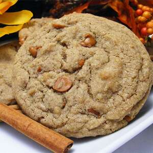

Cinnamon Spice Cookie Recipe

The Best Cinnamon Spice Cookie Recipe Ever
The perfect blend of sugar, spice and everything nice. These cookies will melt in your mouth and
leave you wanting for more. If you don't like these cookies then I do not know how to help you!
The perfect cookie only exists from this recipe. I cannot imagine taht you would find a better recipe anywhere else
If you decide to change anything then you should definitely not take out any cinnamon. That's the best part!
- 1 1/2 cups butter flavored shortening
- 2 cups light brown sugar
- 1/2 cup dark brown sugar
- 2 eggs
- 1/4 cup milk
- 2 tablespoons vanilla extract
- 4 cups all-purpose flour
- 2 teaspoons ground cinnamon
- 1/2 teaspoon ground nutmeg
- 1/4 teaspoon ground cloves
- 1 1/2 teaspoon baking soda
- 2 teaspoons salt
- 2 cups cinnamon chips
- 1 cup chopped pecans (optional)
-
Preheat the oven to 350 degrees F (175 degrees C). Grease cookie sheets.
-
In a large bowl, cream together the butter flavored shortening, light brown sugar and dark brown sugar.
Beat in the eggs one at a time, then stir in the milk and vanilla, blending until the mixture is light
and fluffy. Combine the flour, cinnamon, nutmeg, cloves, baking soda and salt; stir into the batter
until well blended. Mix in cinnamon chips and if using, pecans. Drop rounded spoonfuls of dough onto
the prepared cookie sheets about 2 inches apart.
-
Bake for 8 to 10 minutes in the preheated oven, just until the cookies lose their gloss. Remove from
the cookie sheets to wire racks to cool.